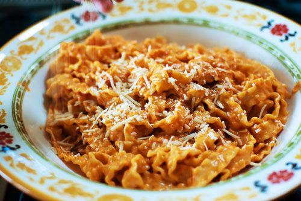

Vodka Sauce Pasta

This take on a vodka sauce pasta has a secret. The secret is it's actually wine in the sauce!
Recipe featured in: Cooking With Evan and Katelyn
Ingredients
- 2 tbsp Olive Oil
- 2 tbsp Butter
- 1 Whole Medium Onion
- 3 tbsp Minced Garlic
- 1 cup of non-sweet Wine
- 14oz can of Tomato Puree
- 2/3 cup Heavy Cream
- Red Pepper Flakes
- 1/4 tsp Kosher Salt
- Pepper
- 1/2 cup Parmesan Cheese
Steps
- Heat oil and butter in a large pot on medium-high heat.
- Add chopped onion and cook until translucent
- Add garlic and continue cooking until onion is very soft.
- Pour in wine and cook until it is reduced by half
- Add tomato puree and stir constantly for a few minutes
- Reduce heat to low.
- Add heavy cream, red pepper flakes, salt, pepper, and parmesan.
- Stir until parmesan is incorporated.
- Serve with your choice of pasta and optionally Magic Broccoli